我们接着上一篇条件控制的例子。
我们现在有了所有同学的成绩，随机取出10人，成绩分别为：97、56、49、65、75、89、66、83、77、99。我们需要打印出每个成绩。该怎么做呢？
首先，我们需要定义一个数组，用来存放这10个人的成绩。
xxxxxxxxxxval scores = arrayOf(97, 56, 49, 65, 75, 89, 66, 83, 77, 99)那我们怎么来取这个数组中的成绩呢？
在前面，我们学到了数组可以通过下标来取值，下标是从0开始，所以最大值是数组容量减1。在这里，我们就需要用到循环控制。
Kotlin中的循环控制有两个关键字定义，for和 while。
首先，分别使用for和while来取值。
xxxxxxxxxxfun main() { val scores = arrayOf(97, 56, 49, 65, 75, 89, 66, 83, 77, 99) for (score in scores) { println(score) }}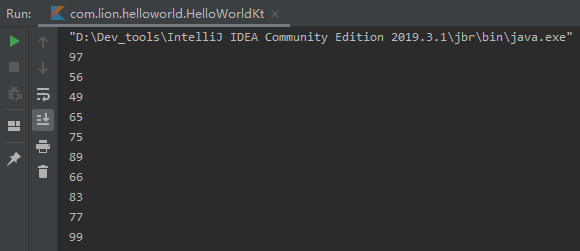
我们看到for语句的基本用法为 for (item in condition) {}。需要注意的是，for循环能够遍历任何提供了迭代器的对象。
那有同学可能会说，我不仅要打印成绩，我还要打印它是第几个，当然也是可以的。
xxxxxxxxxxfun main() { val scores = arrayOf(97, 56, 49, 65, 75, 89, 66, 83, 77, 99) for (index in scores.indices) { println("第${index + 1}位的成绩为${scores[index]}") }}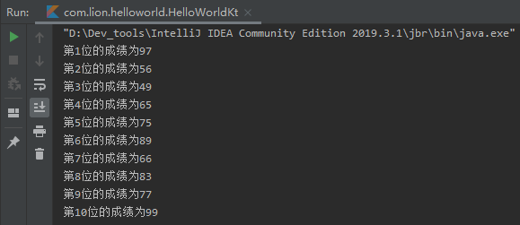
在这里，需要说明的是，这种情况下，我们也可以使用Kotlin的库函数来实现，如：
xxxxxxxxxxfun main() { val scores = arrayOf(97, 56, 49, 65, 75, 89, 66, 83, 77, 99) for ((index, value) in scores.withIndex()) { println("第${index + 1}位的成绩为$value") }}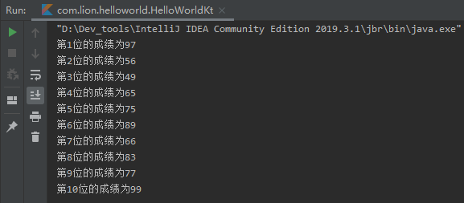
我们用for实现了我们要的功能，那我们接下来用另一个条件控制语句while来实现。while是最基本的循环结构，有两种结构形式，分别为：
xxxxxxxxxxwhile (condition) {}xxxxxxxxxxdo {} while (condition)两种结构形式的不同点在于，第一种仅当条件满足时，执行循环体{}中的代码块，而第二种会至少执行一次循环体中的代码块再判断是否满足条件。
xxxxxxxxxxfun main() { val scores = arrayOf(97, 56, 49, 65, 75, 89, 66, 83, 77, 99) var index = 0 while (index < scores.size) { println("第${index + 1}位的成绩为${scores[index]}") index++ }}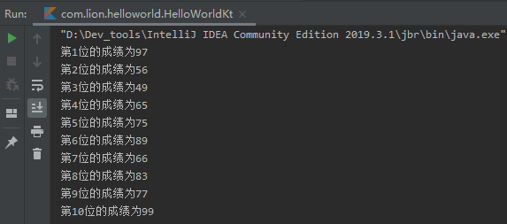
我们通过do - while来实现一下，我们可以看到同样的执行结果。
xxxxxxxxxxfun main() { val scores = arrayOf(97, 56, 49, 65, 75, 89, 66, 83, 77, 99) var index = 0 do { println("第${index + 1}位的成绩为${scores[index]}") index++ } while (index < scores.size)}无论for还是while，都相当于把内容逐个取出来，那我们不禁要问，如果我不想每个都取出来，比如要1、3、5这样取，可以吗？
答案当然是肯定的，这里就用到了步长的概念。
在Kotlin中，有对应的函数提供步长的实现，其语法为:
xxxxxxxxxxfor (i in n..nx step n)举个例子：
xxxxxxxxxx for (index in 1..10 step 2) { println(index) }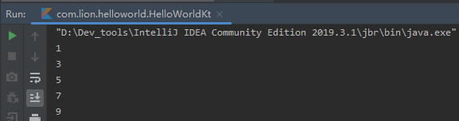
另外，Kotlin还提供了实用的函数，如downTo、until。until我们前面已经有说过，我们来看一下downTo。
如果我们要从10开始，递减打印到1。
xxxxxxxxxx for (index in 10 downTo 1) { println(index) }结果大家可以自己执行一下。另外，downTo也是可以添加步长step。
有时候，我们并不希望把所有的数据都依次循环完，我们可能希望在循环达到某个条件后跳过本次循环或者终止循环，这时候，就需要用到跳转表达式。Kotlin中结构化跳转有三种，分别为：
我们来修改一下条件，比如，我们只需要输出前5位同学的成绩，肯定是需要循环到第五位同学后，终止本次循环。
xxxxxxxxxxfun main() { val scores = arrayOf(97, 56, 49, 65, 75, 89, 66, 83, 77, 99) for (index in scores.indices) { if (index == 5) break println("第${index + 1}位的成绩为${scores[index]}") }}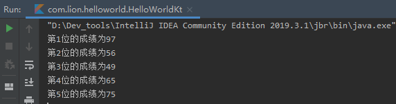
对比之前的实现，我们仅加了一行代码if (index == 5) break，即实现我们想要的结果。在这里，使用return可以达到同样的效果。
相反地，我们如果不要第五位同学的成绩，这时候就需要使用到continue了， 从字面意思就可以看到，是继续的意思。
xxxxxxxxxxfun main() { val scores = arrayOf(97, 56, 49, 65, 75, 89, 66, 83, 77, 99) for (index in scores.indices) { if (index + 1 == 5) continue println("第${index + 1}位的成绩为${scores[index]}") }}我们来看一下执行结果：
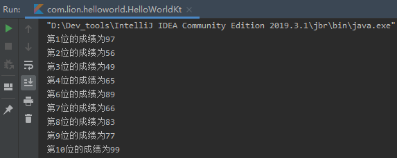
输出的结果中，没有第五位同学的成绩。这里使用index + 1的原因是，我们要不输出第五位同学的成绩，而数组的下标是从0开始的，需要在下标值上加1。
至此，我们的任务基本完成。
但是呢，现实中的对程序功能实现的要求可能千奇百怪，这取决于你的客户和你的产品经理。
当然我们学习中的要求还是比较简单的，比如我们先来输出一个9×9的乘法表。
先分析一下，要打印这个表，那就需要从1×1开始，打印到9×9。很容易想到，这里面会存在两个循环，一个横向从1到9，一个纵向从1到9。好了， 我们来试试。
xxxxxxxxxxfun main() { for (hIndex in 1..9) { for (vIndex in 1..9) { print("|") print("$hIndex × $vIndex = ${hIndex * vIndex}") } print("|") println() }}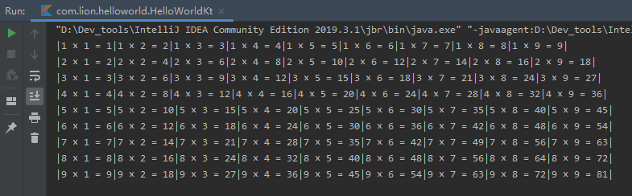
如果你是第一次接触代码编程，那需要解释一下，在程序中，加、减、乘、除是以+ - * /来表示（如果你已经熟悉，就当我没说）。
其实，我们实现这个表格，还是相对比较简单的，当然格式有点简陋，只能勉强算是个表格，如果感兴趣的同学，可以尝试输出个更好看的。
接下来，又有新的要求。比如，我们的乘法表格，不想要横向5后面的，我们可以这样实现。
我们先看看什么是所谓的标签。
一般情况下， 跳转表达式均可以添加标签，以跳转到对应的标签。
xxxxxxxxxxfun main() { out@for (hIndex in 1..9) { inner@for (vIndex in 1..9) { if (vIndex == 5) { println() continue@out } print("|") print("$hIndex × $vIndex = ${hIndex * vIndex}") } print("|") println() }}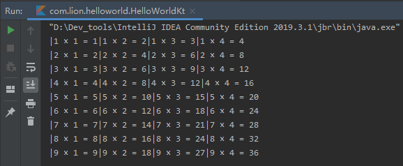
你可能会说，我@inner的标签中写成1..4不就成了，的确是的。不过我们为了演示一下标签tag的用法，就将就一下。
其实我们这样用的话，可能体现不出标签的实际价值，我们再来看下一个例子。
xxxxxxxxxxarray1.forEach { out -> array2.forEach { inn-> if (condition) }}.forEach{}是一个库函数，功能和for循环一样，但是，在这样使用的时候，就存在一个问题，比如，我们有两个数组。
xxxxxxxxxxval array1 = arrayOf(0, 1, 2, 3, 4, 5)val array2 = arrayOf(9, 8, 7, 6, 5, 4)我们输出数组2中与数组1中元素相等的值，并且我们使用forEach的方式。
尝试之后，你就会发现，.forEach中的中断方式只有一个return。那我们怎么来区分return需要返回到哪里呢？
如果这样写：
xxxxxxxxxx val array1 = arrayOf(0, 1, 2, 3, 4, 5) val array2 = arrayOf(9, 8, 7, 6, 5, 4) array1.forEach { out -> array2.forEach { inn-> if (out == inn) { println("inner = $inn") return } } }首先，需要说明一下，forEach{}中的默认参数均为it，因此为了区分，我们需要给它定义不同的参数名称。我们来看执行结果：
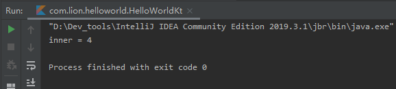
怎么只有一个4呢？，因为我们默认的return会使得整个方法返回，因此条件匹配后，结束了整个方法。那这不是我们想要的。
边学边写的同学可能会发现，当我们键入return时，IDEA的提示中，会有3个return的提示。
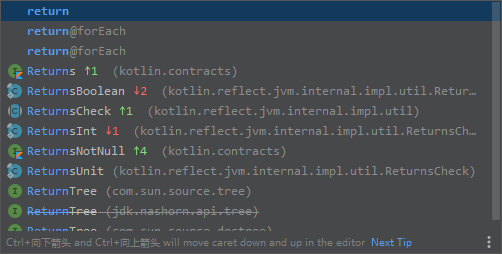
那下面两个return@forEach是什么呢？我们来试一下效果。
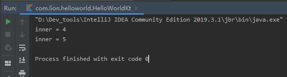
我们看到，输入的结果与我们的预期结果一致了。
但是，这个return@forEach谁能知道它返回到了里面的还是外面的呢？当然了，它默认返回的是最里层的forEach。在这里，它相当于第二层循环的continue动作。
这时候，添加标签就显得相当重要了，可以明确的知道，返回了哪个位置。
xxxxxxxxxx array1.forEach outer@ { out -> array2.forEach inner@{ inn-> if (out == inn) { println("inner = $inn") return@inner } } }而且添加标签的意义不仅于此，我们再来看。
如果我们的数组定义为：
xxxxxxxxxxval array1 = arrayOf(0, 1, 5, 3, 9, 4)val array2 = arrayOf(9, 8, 7, 9, 5, 4)且，我们输出数组2中与数组1中相等的数据，且不能有重复。
如果不加标签：
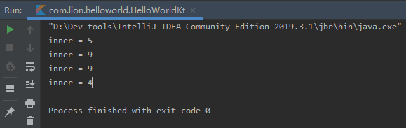
很显然，结果并不是我们想要的，因为输出了重复的9，因为我们第二个数组中有重复的元素9。意味着，我们匹配到第一个9之后，必须退出第二层循环，到第一层循环中。加上标签后，我们就很容易实现了。
xxxxxxxxxx val array1 = arrayOf(0, 1, 5, 3, 9, 4) val array2 = arrayOf(9, 8, 7, 9, 5, 4) array1.forEach outer@ { out -> array2.forEach inner@{ inn-> if (out == inn) { println("inner = $inn") return@outer } } }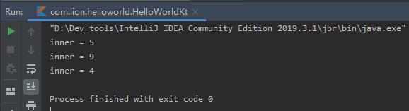
关于循环控制的内容，就基本结束了。